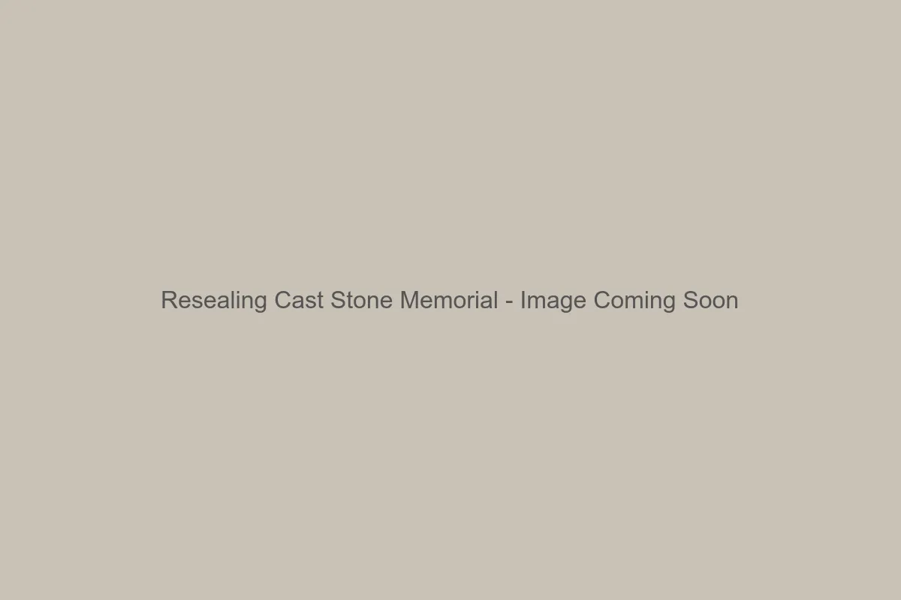

Granite Memorial Maintenance
Standard granite pet memorial stones are the lowest-maintenance option available. Their dense, non-porous nature repels water and biological growth naturally.
- Cleaning: Simply wipe down with water and a soft cloth to remove bird droppings or dirt. Avoid harsh chemicals or acidic cleaners (like vinegar) which can dull the polish over time.
- Sealing: Natural granite typically does not require sealing. It remains naturally resistant to staining.
Cast Stone & Concrete Care
Cast stone has a more porous surface than granite, making it susceptible to absorbing moisture and growing moss if placed in deep shade.
- Cleaning: Use a mild solution of dish soap and water with a soft-bristle brush. Rinse thoroughly.
- Moss Removal: If green algae appears, a 50/50 mix of water and household bleach can be sprayed on, left for 10 minutes, and rinsed off. This will kill the organic growth without harming the stone.

Resealing Recommendations
For cast stone memorials, we recommend applying a clear, breathable concrete sealer every 2-3 years. This helps prevent water from soaking into the material, reducing the risk of freeze-thaw cracking in winter. Look for a "matte" or "natural look" penetrating sealer at your local hardware store.
Paint Touch-Ups
The specialized lithichrome paint used in the engraved letters is durable but not permanent. UV sunlight will eventually fade it over 5-10 years.
If the lettering becomes faint, you can refresh it yourself. Clean the letters thoroughly, let them dry completely, and carefully apply an outdoor-rated acrylic or enamel paint. Wipe away excess paint from the surface immediately with a rag, leaving it only in the deep crevices.
Winter Protection
If you followed our guide on installing a pet memorial stone on a proper base, it should withstand winter well. However, ensure the stone is not sitting in a low spot where water pools and freezes, as expanding ice is powerful enough to crack even durable concrete over time.
If you are comparing long-term durability, see our Granite vs Cast Stone guide for more details on material resilience.
FAQ
Can I use a pressure washer?
We advise against it. High pressure can blast the paint out of the engraved letters or chip
cast stone edges.
What if my granite loses its shine?
Polished granite should hold its shine for decades. If it looks dull, it may just be a film
of dirt or hard water deposits. Try a specialized granite cleaner.
Will weed wackers damage the stone?
Yes. The spinning nylon line can chip the edges of cast stone. It's best to keep a small
buffer of mulch or bare soil around the marker.